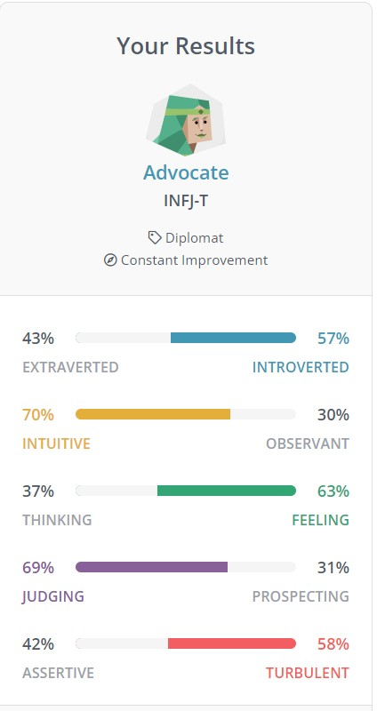

Personality Profile
Ashley Stanley
16 Personalities
Based on the 16 Personalities Profile test the results show the following results:
57% Introverted, 70% Intuitive, 63% Feeling, 69% Judging and 58% Turbulent.
Digging into these results the data showed an overall profile type that fits the description of an Advocate. Advocates are described by 16 Personalities as passionate and enigmatic, Advocate types stand out for imagination, compassion, integrity and strong principles. Idealistic types are individuals capable of turning ideals into plans and executing them. Strengths include being creative, insightful, principled, passionate and altruistic.
Advocate types can find challenging navigating interpersonal conflicts, confronting unpleasant facets, pursuing self-realization or finding a fulfilling career path leaving the individual questioning who they really are. Some weaknesses include sensitivity to criticism, reluctant to open up, perfectionist, always chasing something grander and can be prone to burnout because of these.
Advocate types want to find meaning to their work which can make it difficult to choose fulfilling career paths. Advocates desire to help and connect can make roles as psychologists, teachers, social workers or health care fulfilling.

What is your Learning Style?
EducationPlanner.org
According to the self assessment from educationplanner.org, the profile assessment is as follows:
30% auditory, 50% visual and 20% tactile.
Visual learning styles derive success my studying pictures or reading and understand things by sight. Visual learning visualize outcomes in their head and like to see what they are learning.
Creativity Quiz
Based on the Mind Tools creativity test and scoring the results interpret a score of 60 out of a possible 80. Mind tools categorizes this result as a highly creative individual. It describes creative people as finding problems, and doesn’t allow problems to surface and preempt and redirects for planning and resolution before they come to light. Gathering and reflecting information, as well as generating and evaluating ideas in assisting with planning and problem solving.
What do these results mean for me?
Based on the results displayed I can definitely agree with a lot of the traits 16 personalities identified and how they align with my personal review. Based on personal life experiences I did at one stage contemplate a career in counselling or phycology but found I would be more prone to mental burn out from personally carrying burdens. Due to my creative natures my desire to learn, plan and implement my current choices of career and prospect career paths align with these desires and traits.
Based on my personal experience thew learning style assessment from education planner.org assesses quite accurately and describes the way I learn and process information visualizing. Auditory is a secondary but even when directions are verbalized I find myself converting the verbal queues and imagining them visually to process information. And the creativity test from MindTools seems to align to my experiences and how I problem solve and think creatively, I generally plan for the worse case scenario aim to process through problems and generate solutions timely before problems arise but still capable to think quick and put out fires as they start.
Influencing behavior in a team and consideration when forming groups
When reviewing these results and referring to my current job path. Being a leader, collaborator and problem solver in my current work role in management helps me be versatile with different groups and types of people. I can take charge, equally input and listen and compromise and collaborate to be an asset in decision making in a team environment. The results more accurately reflect my characteristics and reality better than I believed the outcomes I expected. I think when forming a team these results assist in team forming more an understanding of different profiles and understanding how to all work together to reach outcomes and amicable resolution.